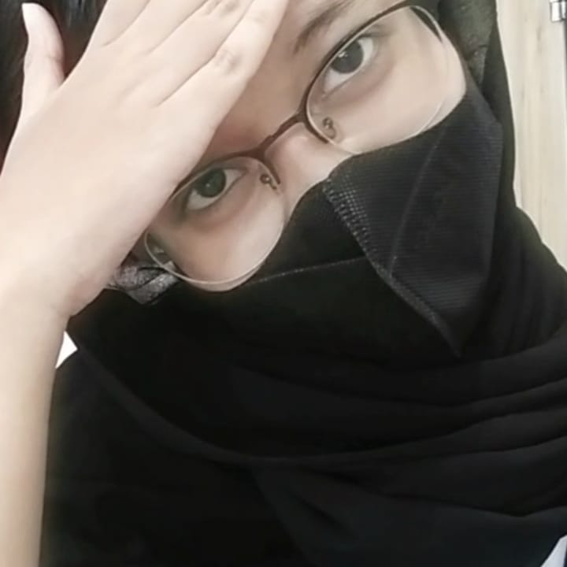

Dhea Nickyta Az Zahra
student
About
it projek adalah salah satu program keahlian yg di adakan di smk wikrama bogor yaitu di sebut sebagai pplg yg di dalamnya belajar bahasa bahasa pemrograman.
Skill
| Percent | |
|---|---|
| HTML | 80% |
| CSS | 40% |
Education
Primary School : SDN Pakuan (2012 - 2018)
Junior High School : SMP Amaliah (2018 - 2021)